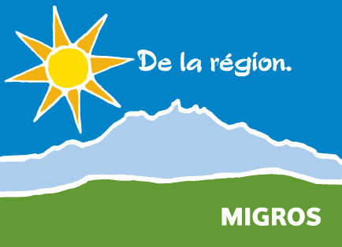
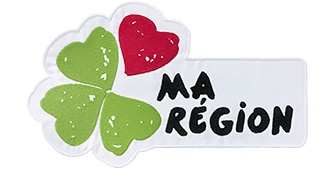
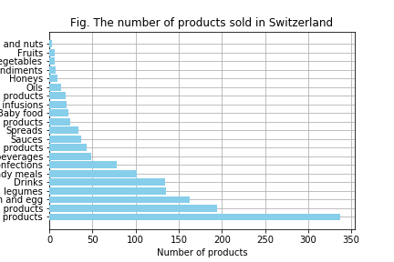

A brief introduction
At an era where more and more ecological questions have risen, it seems that European countries, such as
Switzerland,
are trying to encourage the sale of their national products within their own territory and reduce the
importation of alimentary goods.
Indeed, one can easily notice that swiss supermarkets are promoting regional products, with labels such as “Aus
der Region” in order
to answer a growing request from customers to buy local products.


 However, are these few changes a simple superficial trend, or do we really import fewer goods? The research
conducted for the lecture
Applied Data Analysis at the EPFL intends to determine the origin of most products we consume within Switzerland
and in general,
to give an overview of the income of resources from other countries to Switzerland, taking into account
information as the origin
of the ingredients and the place of manufacture.
The research was conducted with the help of the database Open
Food Facts,
which provides origin information about products that are consumed in different countries around the world.
However, are these few changes a simple superficial trend, or do we really import fewer goods? The research
conducted for the lecture
Applied Data Analysis at the EPFL intends to determine the origin of most products we consume within Switzerland
and in general,
to give an overview of the income of resources from other countries to Switzerland, taking into account
information as the origin
of the ingredients and the place of manufacture.
The research was conducted with the help of the database Open
Food Facts,
which provides origin information about products that are consumed in different countries around the world.
What kind of products do we consume in Europe?
As part of our study, it is interesting to first understand the general situation in terms of food habits of the
population.
What kind of products do we most consume? As we will see later, the answers can have an important impact, as
processed food is not
always manufactured within the country it is sold, and the origin of some products has to be foreign, as not all
vegetables and fruits can
grow under our latitudes. However, as Switzerland is a small country and requires the ressources from other
countries
in order to feed its population, it is non negligible to study the behaviour of our neighboors, before focusing
on our country.
--As we can see on the map, there is....
List the categories of products in Europe
What about Switzerland?
As we can see from our data set, there is an important amount of dairy products that are available in our swiss
supermarkets (almost 350 products out of the x products
present in the database), which are followed by plant based products and the category of meat, fish and eggs. If
we compare these results with
the official report "Statistiques
et évaluations
concernant l'agriculture et l'alimentation" of 2016 of the Union suisse des Paysans, it seems that the
total amount in kg of consumption
of plant based products per inhabitant is actually greater than dairy products.
Categories of products consumed in Switzerland

Where do these products come from?
From a european point of view
From a swiss point of view
Switzerland greatly depends on other countries in order to feed its population. Because of the repartition of the
mountains,
the size of arable land is not big enough in order to produce and fulfill the needs of the entire population.
The report "Statistiques
et évaluations
concernant l'agriculture et l'alimentation" of 2016 of the Union suisse des Paysans shows that, from
2010 to 2015, the indigenous
production covered on average 60,83% of the consumption of foodstuffs. It means that at least 39,17% of the
products we consumed in
Switzerland in-between 2010 and 2015 were imported goods. --This is shown/ or not shown by the results provided
by our dataset...
Which categories of products are the most imported?
Is there an evolution of importation of goods in time?
The swiss Federal Customs Administration (AFD), depertament of the swiss confederation, proposes free open data
on the swiss
import of varied products. Among others, the quantity of products from agriculture, forestry and fishing
imported every year since
1988 is available.
So... are we consuming local?
Of course we do! Switzerland still provides more food goods than it imports. However, there is a great tendency
to import more and more
foodstuffs, but this can be explained by various reasons. We have on one hand the fact the swiss population is
growing, which means that
there are more and more mouthes to feed and the surface of arable land cannot increase consequently.
Is the dataset really accurate?
As a final word
Consumming more localy is a difficult task, as it means to be aware of the real seasons for foods such as
vegetables or fruits,
and to restrict our consumption of some products to specific times of the year. Indeed, the consumption of fresh
tomatoes, strawberries
or apricots in the middle of the winter are bad habits and should not even be considered, as they just do not
respect nature.
These choices should be made for obvious ecological reasons, but other challenges are also at the core of this
need to consume more locally.
Indeed, the agricultural sector in Switzerland suffers from a decreasing employement rate since 1990, evolving
from more than 250'000
employees in the country to a little more than 150'000 in 2016 (
statistics from Union suisse des Paysans, archives from 2016).The agricultural sector could be the first
to benefit from a consumption of
local products and such behavior, if generalized to a great amount of the population, could save small farmers
and help the swiss economy.
As a conclusion to this observable trend, it is interesting to acknowledge that beyond the general visible
tendency of promoting regional products in our
supermarkets, the question risen by this study is in fact more important and significant that one might think.
Indeed, in 2014, the SSN, the Société Suisse de Nutrition
(the Swiss Society for Nutrition), created a programm called
FOODprints, which encourage people to consume more locally. The group found out that 25% of our
environmental nuisances are due to our
bad eating habits which include, among other components, such as our too large consumption of meat, the fact
that we tend to buy too many
products that are not seasonal or that were imported by plane. Of course, Switzerland have to import products in
order to feed its population,
as the land resources are not sufficient for the entire country (as reported from SSN).
But, by consuming products according to their season in our latitude, we can reduce the ecological impact, as
they will require shorter
journeys to be imported, and we can also increase our nutritional health, by beeing aware of what we eat and
why.
The question of the consumption of local products is thus linked to the complex issues of our health, that
greatly depends on our environment,
hence the ecological aspect, and on our bad alimentary habits, and to the importance of developing and promoting
local workers,
which is also related to an economic aspect.